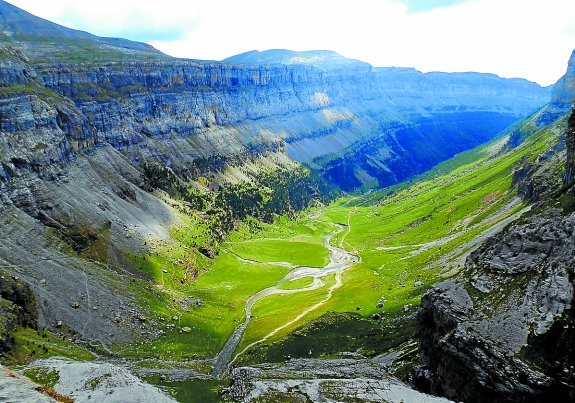
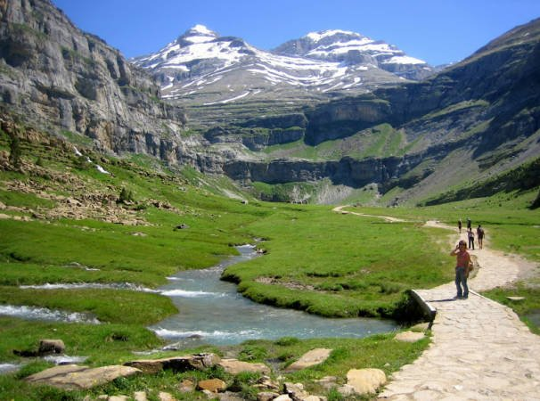

| INICIO | Cilindro de Marboré | Pico de Marboré | Monte Perdido | Pico Añisclo | Taillón |
|   |
El macizo de Monte Perdido, conocido como Las Tres Sorores o Treserols, lo componen los Picos de Monte Perdido (3348 m), Cilindro (3328 m) y Añisclo (3263 m) llamado también, este último, Soum de Ramond, dedicado al pireneísta Louis Ramond de Carbonnières, uno de los primeros exploradores y expertos de la alta montaña pirenaica. En este sector se encuentran 22 cimas de más de 3000 m. El macizo de Monte Perdido forma parte del parque nacional de Ordesa y Monte Perdido, constituido a su vez por cuatro valles de extraordinaria belleza: Ordesa al suroeste, Añisclo al sur, Escuaín al sureste y Pineta al este. Parte del macizo se interna al norte en territorio francés, formando parte del Parc National des Pyrénées, destacando el Valle y Circo de Gavarnie, otro impresionante circo glaciar que en su cabecera tiene la cascada más alta de Europa, con más de 400 metros de caída vertical. Monte Perdido es el pico de la izquierda y el de la derecha es el Cilindro (visto desde el norte). |
||||